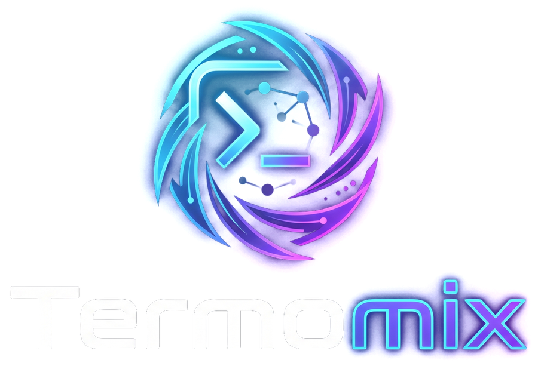

Serveurs et groupes
Organisez vos serveurs en groupes, avec mot de passe ou clé privée. Le système de chaque serveur est reconnu et affiché avec son logo.

Gérez vos serveurs, ouvrez un terminal rapide, parcourez et modifiez vos fichiers distants, et automatisez vos commandes. Vos données restent sur votre machine.
Disponible pour Linux (AppImage, .deb, .rpm) et Windows (installeur, .msi, exécutable portable).
Organisez vos serveurs en groupes, avec mot de passe ou clé privée. Le système de chaque serveur est reconnu et affiché avec son logo.
Connexion en un clic ou en saisissant user@hôte, onglets, recherche, et reconnexion automatique après une coupure réseau.
Explorateur SFTP avec glisser-déposer, transferts de dossiers, et éditeur intégré avec coloration syntaxique pour modifier un fichier distant.
Enregistrez les commandes que vous tapez, puis relancez-les en un clic sur un ou plusieurs serveurs.
Un fichier unique, chiffré avec une phrase secrète, pour tout retrouver sur un autre ordinateur. Aucun compte, aucun serveur tiers.
Construit avec Tauri et Rust : démarrage rapide, faible consommation. Interface en français ou en anglais.